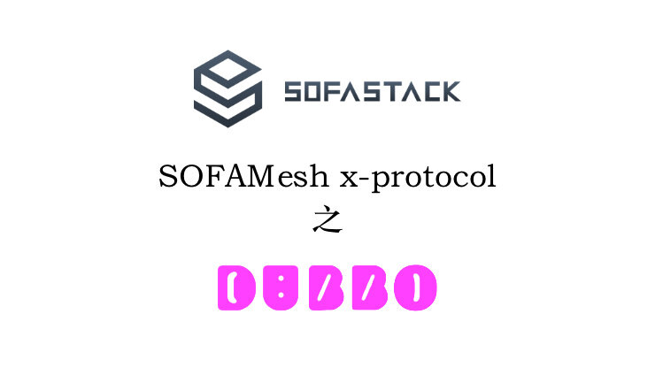
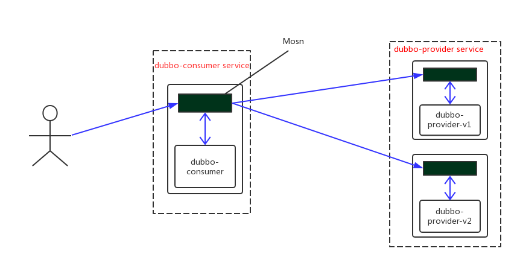

本文作者：彭泽文，阿里巴巴UC事业部高级开发工程师。

X-protocol 的定位是云原生、高性能、低侵入性的通用 Service Mesh 落地方案，依托 Kubernetes 基座，利用其原生的服务注册和服务发现机制，支持各种私有 RPC 协议低成本、易扩展的接入，快速享受 Service Mesh 所带来的红利。
本文将以 Dubbo 为例，演示 Dubbo on x-protocol 场景下 Service Mesh 路由功能，涵盖 Version route 、Weighted route 功能。
关于 x-protocol 的介绍请参考 蚂蚁金服开源的 SOFAMesh 的通用协议扩展解析。
前期准备
- 安装 Minikube，推荐使用 Minikube v0.28 以上来体验，请参考 https://github.com/kubernetes/minikube
- 安装 kubectl 命令行工具，请参考 https://kubernetes.io/docs/tasks/tools/install-kubectl/#install-kubectl
- 安装 VM Driver，推荐安装 Virtual Box、Mac 用户也可以选择 hyperkit
- 了解 Istio Traffic Management 相关概念，相关链接：https://istio.io/zh/docs/tasks/traffic-management/
部署
先看部署效果图：

本示例中dubbo-consumer的部署方式采用直连模式，即不走注册中心，完全依托kubernetes平台提供的服务注册及服务发现能力。
1. 安装 Kubernetes
安装 kubectl 命令行工具 推荐使用 Kubernetes 1.10 版本，并使用合适的 VM Driver，推荐使用默认的 VirtualBox。
minikube start --memory=8192 --cpus=4 --kubernetes-version=v1.10.0 \
--extra-config=controller-manager.cluster-signing-cert-file="/var/lib/localkube/certs/ca.crt" \
--extra-config=controller-manager.cluster-signing-key-file="/var/lib/localkube/certs/ca.key"
Mac OSX 用户使用的 hyperkit 需要特别指定：
minikube start --memory=8192 --cpus=4 --kubernetes-version=v1.10.0 \
--extra-config=controller-manager.cluster-signing-cert-file="/var/lib/localkube/certs/ca.crt" \
--extra-config=controller-manager.cluster-signing-key-file="/var/lib/localkube/certs/ca.key" \
--vm-dirver=hyperkit
等待 Kubernetes 启动完毕，通过 kubectl 命令检查
kubectl get pods --namespace=kube-system
2. 部署 SOFAMesh
本示例演示从源代码的 master 分支直接安装最新的 SOFAMesh，安装过程使用 Helm 完成。
从 GitHub 拉取最新代码：
git clone https://github.com/alipay/sofa-mesh.git
cd sofa-mesh
创建 SOFAMesh 需要的 CRD：
kubectl apply -f install/kubernetes/helm/istio/templates/crds.yaml
kubectl apply -f install/kubernetes/helm/istio/charts/certmanager/templates/crds.yaml
使用 Helm 安装 SOFAMesh：
kubectl apply -f install/kubernetes/helm/helm-service-account.yaml
helm init --service-account tiller
helm install install/kubernetes/helm/istio --name istio --namespace istio-system
安装 istioctl 命令行工具：
# 使用 make 工具安装 istioctl
make istioctl-install
3. 创建示例的命名空间
以下示例都将运行在 e2e-dubbo 命名空间下，如无 e2e-dubbo 命名空间，需先创建该命名空间：
kubectl apply -f samples/e2e-dubbo/platform/kube/e2e-dubbo-ns.yaml
4. 注入 MOSN
部署 dubbo-consumer 和 dubbo-provider，部署前需要先使用 istioctl 进行 sidecar 注入，以下示例采用手动注入方式，也可以通过 istio namespace inject 功能来自动注入。
# mosn sidecar inject and deploy
kubectl apply -f <(istioctl kube-inject -f samples/e2e-dubbo/platform/kube/dubbo-consumer.yaml)
kubectl apply -f <(istioctl kube-inject -f samples/e2e-dubbo/platform/kube/dubbo-provider-v1.yaml)
kubectl apply -f <(istioctl kube-inject -f samples/e2e-dubbo/platform/kube/dubbo-provider-v2.yaml)
5. 部署示例应用
部署 dubbo consumer service 及 dubbo provider service。
# http service for dubbo consumer
kubectl apply -f samples/e2e-dubbo/platform/kube/dubbo-consumer-service.yaml
# dubbo provider service
kubectl apply -f samples/e2e-dubbo/platform/kube/dubbo-provider-service.yaml
检查部署状态：
#kubectl get pods -n e2e-dubbo
NAME READY STATUS RESTARTS AGE
e2e-dubbo-consumer-589d8c465d-cp7cx 2/2 Running 0 13s
e2e-dubbo-provider-v1-649d7cff94-52gfd 2/2 Running 0 13s
e2e-dubbo-provider-v2-5f7d5ff648-m6c45 2/2 Running 0 13s
#kubectl get svc -n e2e-dubbo
NAME TYPE CLUSTER-IP EXTERNAL-IP PORT(S) AGE
e2e-dubbo-consumer ClusterIP 192.168.1.7 <none> 8080/TCP 10s
e2e-dubbo-provider ClusterIP 192.168.1.62 <none> 12345/TCP 10s
e2e-dubbo-consumer 是一个 Dubbo 客户端应用，它暴露了一个 8080 端口的 HTTP 服务，方便我们进行验证，e2e-dubbo-provider 是一个 Dubbo 应用。 当 e2e-dubbo-consumer 通过 12345 端口调用 e2e-dubbo-provider 时，流量会被 IPtable 规则拦截，导流给 SOFAMosn。
验证路由能力
本示例将验证 Version route 和 Weighted route 能力。
1. 验证 Version Route 能力
本例将演示控制 dubbo-consumer的所有请求指向 dubo-provider-v1 配置DestinationRule:
istioctl create -f samples/e2e-dubbo/platform/kube/dubbo-consumer.destinationrule.yaml
dubbo-consumer.destinationrule.yaml 内容如下：
apiVersion: networking.istio.io/v1alpha3
kind: DestinationRule
metadata:
name: e2e-dubbo-provider
namespace: e2e-dubbo
spec:
host: e2e-dubbo-provider
subsets:
- name: v1
labels:
ver: v1
- name: v2
labels:
ver: v2
配置VirtualService：
istioctl create -f samples/e2e-dubbo/platform/kube/dubbo-consumer.version.vs.yaml
dubbo-consumer.version.vs.yaml 内容如下：
apiVersion: networking.istio.io/v1alpha3
kind: VirtualService
metadata:
name: e2e-dubbo-provider
namespace: e2e-dubbo
spec:
hosts:
- e2e-dubbo-provider
http:
- route:
- destination:
host: e2e-dubbo-provider
subset: v1
路由策略已经生效，可以 http 请求 dubbo consumer 来触发 rpc 请求观察效果，由于使用 Minikube 的关系，需要启动一个 Pod 用来测试
# 启动一个 busybox Pod 并登陆
kubectl run -i -t busybox --image=yauritux/busybox-curl --restart=Never
# 使用 e2e-dubbo-consumer 的域名访问服务
curl e2e-dubbo-consumer.e2e-dubbo.svc.cluster.local:8080/sayHello?name=dubbo-mosn
清理路由策略：
istioctl delete -f samples/e2e-dubbo/platform/kube/dubbo-consumer.destinationrule.yaml
istioctl delete -f samples/e2e-dubbo/platform/kube/dubbo-consumer.version.vs.yaml
退出 Minikube shell
2. 验证 Weight Route 能力
本例将演示控制 dubbo-consumer 的请求指向 dubo-provider-v1，dubo-provider-v2。并控制流量分配比例为 v1：20%，v2：80%。
配置DestinationRule:
# 如果在上一示例中已经创建好了，请跳过这一步
istioctl create -f samples/e2e-dubbo/platform/kube/dubbo-consumer.destinationrule.yaml
dubbo-consumer.destinationrule.yaml 内容如下：
apiVersion: networking.istio.io/v1alpha3
kind: DestinationRule
metadata:
name: e2e-dubbo-provider
namespace: e2e-dubbo
spec:
host: e2e-dubbo-provider
subsets:
- name: v1
labels:
ver: v1
- name: v2
labels:
ver: v2
配置 VirtualService：
istioctl create -f samples/e2e-dubbo/platform/kube/dubbo-consumer.weight.vs.yaml
dubbo-consumer.weight.vs.yaml 内容如下：
apiVersion: networking.istio.io/v1alpha3
kind: VirtualService
metadata:
name: e2e-dubbo-provider
namespace: e2e-dubbo
spec:
hosts:
- e2e-dubbo-provider
http:
- route:
- destination:
host: e2e-dubbo-provider
subset: v1
weight: 20
- destination:
host: e2e-dubbo-provider
subset: v2
weight: 80
路由策略已经生效，可以 http 请求 dubbo consumer 来触发 rpc 请求观察效果：
# 启动一个 busybox Pod 并登陆
kubectl run -i -t busybox --image=yauritux/busybox-curl --restart=Never
# 使用 e2e-dubbo-consumer 的域名访问服务
curl e2e-dubbo-consumer.e2e-dubbo.svc.cluster.local:8080/sayHello?name=dubbo-mosn
清理路由策略：
istioctl delete -f samples/e2e-dubbo/platform/kube/dubbo-consumer.destinationrule.yaml
istioctl delete -f samples/e2e-dubbo/platform/kube/dubbo-consumer.weight.vs.yaml
更多功能，敬请期待。